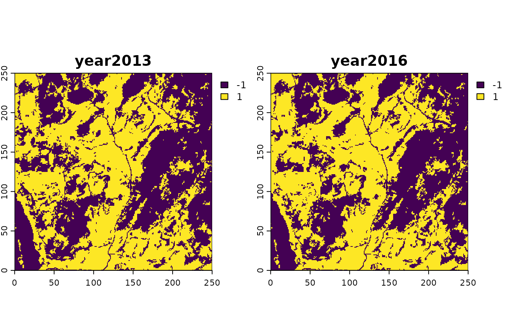
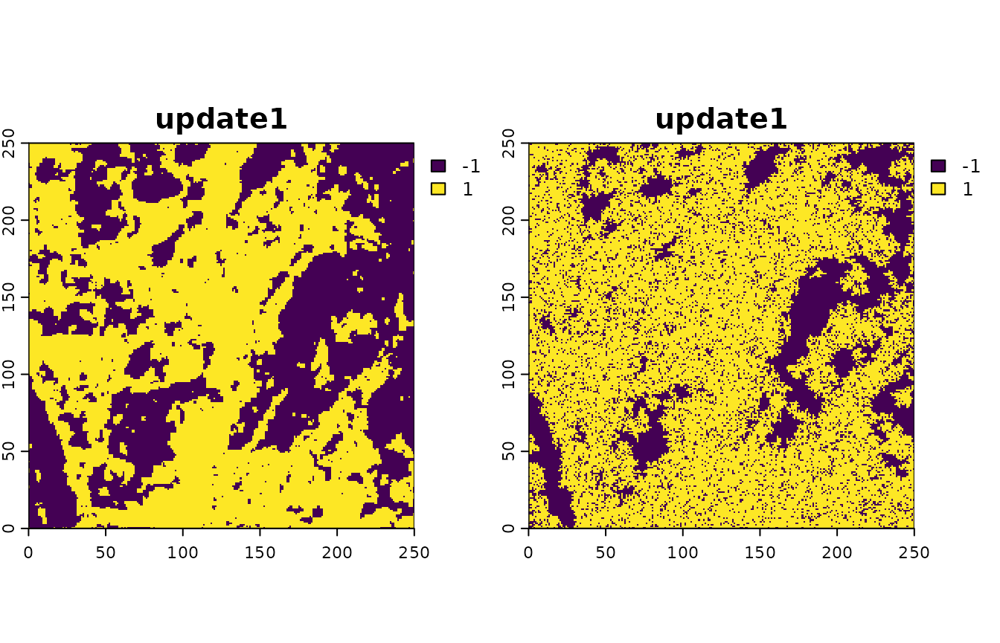

Optimizing spatialising parameters
Jakub Nowosad
Source:vignettes/Optimizing_spatialising_parameters.Rmd
Optimizing_spatialising_parameters.RmdThe spatialising package allows to perform a kinetic Ising model simulation of an observed change in a binary land pattern between t1 and t2. The goal is to find the values of two free parameters of the Ising model, B and J, under which the simulated pattern, identical to the observed pattern at t1, will advance to the simulated pattern at t2 that is very close to the observed pattern at t2.
Setup
Let’s start by attaching two packages: terra (for reading and processing raster data) and spatialising, and read two datasets: maine2013 and maine2016.
library(terra)
library(spatialising)
maine2013 = rast(system.file("raster/maine2013.tif", package = "spatialising"))
maine2016 = rast(system.file("raster/maine2016.tif", package = "spatialising"))These rasters represent the same forested area in the state of Maine with 250 rows and columns. The maine2013 raster represents the state in the year 2013, while the maine2016 in 2016. Both of them have only two values: 1 for forest and -1 for non-forest.

A careful look at the west part of the plot above reveals an increase in the forested area between 2013 and 2016.
Metrics
For each of our rasters, we calculate two metrics: m index and texture index. The composition_index (\(m\)) is the sum of all raster values divided by the number of cells. It has a range from -1 to 1, where -1 means that all cells have value -1 and 1 means that all cells have value 1.
composition_index(c(maine2013, maine2016))
#> [1] 0.036640 0.065664Here, we can see an increase in the values of the m index between 2013 and 2016, which means that the forested area (1) had increased.
The texture index (\(t\)) is an average over the entire site of the values of neighboring cells. It has a range from 0 to 1, where 0 is a smooth, fine texture, and 1 is a coarse texture.
texture_index(c(maine2013, maine2016))
#> [1] 0.7423454 0.7548273The values of texture index also increased between the studied years, but to a much lesser degree.
Simulations
Now, we could try to simulate the state in the year 2016 using the maine2013 raster as a reference with the kinetic_ising() function. It requires the input raster (x), the strength of the external pressure (B), the strength of the local autocorrelation tendency (J), and also has some optional arguments, such as the number of iterations (iter), and the inertia (inertia).
The simulation proceeds with one randomly selected cell at a time. The selected cell is given an opportunity to flip its value (1 to -1 or -1 to 1). The probability of a flip depends on the value of the cell and the values of its four neighbors (top, left, bottom, and right). It also depends on the values of B and J. B (positive or negative) is an external pressure: it tries to align cells’ values with its sign. J (always positive) is a strength of the local autocorrelation tendency: it tries to align signs of neighboring cells.
The iter argument controls the number of iterations (how many times the flip of a cell value is attempted). By default, its value is set to the number of cells in the input raster, however, as in this case there were three years between the studied years, we can set it to three times the number of cells. The last parameter, inertia (by default 0), when positive makes it less possible for a cell of -1 to change its value to 1 when surrounded by other -1 cells. As the effect, it minimizes the possibility of a “salt and pepper” effect, where cells of different values are mixed together.
In our example of reforestation, we could assume that the value of B should be positive, as the forested area increased between 2013 and 2016. We could also make an assumption that the value of J should be positive, as many environmental spatial processes express some kind of spatial autocorrelation. At this point, however, the question is: what should be the values of B and J? We may start by trying different values of B and J to see which combination of them results in the best simulation and to gather some kind of intuition regarding these values.
sim1 = kinetic_ising(maine2013, B = 0.3, J = 0.9, iter = ncell(maine2013) * 3, inertia = 150)
sim2 = kinetic_ising(maine2013, B = 0.7, J = 0.1, iter = ncell(maine2013) * 3, inertia = 150)The plot below shows our two simulations. The left one represents a visible increase in the forested area, while keeping these areas spatially coherent. The right one, on the other hand, represents a larger, but also a more “chaotic” increase in the forested area.

To make a numerical decision on which simulation is better, we can calculate the metrics for each of them and compare them with the metrics of the maine2016 raster.
maine2016_metrics = c(composition_index(maine2016), texture_index(maine2016))
sim1_metrics = c(composition_index(sim1), texture_index(sim1))
sim2_metrics = c(composition_index(sim2), texture_index(sim2))The two metrics for a given pattern can be viewed as a metric point (metric1, metric2). Then, a the Euclidean “distance” between two patterns in terms of these two metrics is [(metricA1-metricB1)^2 +{metricA2-metricB2)^2]^(1/2). We can now calculate distance (dissimilarity) between the maine2016 pattern (a target of the simulation) and two simulated candidate patterns (see below).
Here, we join all of the resulting metrics into a single matrix and calculate the Euclidean distance between the metrics of the maine2016 raster and the metrics of each of the simulations using the dist() function. The smaller the distance, the more simulation is similar to the maine2016 raster.
all_metrics = rbind(maine2016_metrics, sim1_metrics, sim2_metrics)
dist(all_metrics)
#> maine2016_metrics sim1_metrics
#> sim1_metrics 0.1330533
#> sim2_metrics 0.4179182 0.4207408Clearly the simulated candidate pattern generated with B = 0.3 and J = 0.9 is a better match to the target.
Optimization
We could now try many different combinations of B and J values and compare the results, but this would be a tedious task. Instead, we can use the optimization package to find the best combination of B and J values using a technique called simulated annealing. The main function in this package, optim_sa(), requires the input function (fun), the starting values (start), and the lower (lower) and upper (upper) bounds for the values. The fun function must take only one input and return a single value.
In our case, the optim_sa() function will try to find the best combination of B and J values that minimize the output value of the fun function. We will use optimize_model() as the input function. It takes a vector x of two values (proposed B and J), runs the kinetic_ising() function with these values, calculates the metrics for the resulting raster, and calculates the Euclidean distance between the metrics of the resulting raster and the metrics of the maine2016 raster.
optimize_model = function(x){
sim = spatialising::kinetic_ising(x = maine2013, B = x[1], J = x[2],
iter = ncell(maine2013) * 3, inertia = 150)
maine2016_metrics = c(composition_index(maine2016), texture_index(maine2016))
sim_metrics = c(composition_index(sim), texture_index(sim))
dist(rbind(maine2016_metrics, sim_metrics))[[1]]
}Now, we can run the optim_sa() function. Here, we will set the starting values of B and J to 0, the lower bound of B to -0.9 and J to 0, and their upper bounds to 0.9.
library(optimization)
optim_params = optim_sa(fun = optimize_model,
start = c(0, 0), lower = c(-0.9, 0), upper = c(0.9, 0.9))The optim_sa() function returns an object that contains the best combination of B and J values in the par element. In this case, the best combination found is B = 0.09 and J = 0.43.1
optim_params$par
#> [1] 0.09 0.44Now, we are able to run the kinetic_ising() function with the best combination of B and J values.
sim_optim = kinetic_ising(maine2016,
B = optim_params$par[1], J = optim_params$par[2],
iter = ncell(maine2013) * 3, inertia = 150)
plot(sim_optim)
We can also check the function_value element that represents the Euclidean distance between the metrics of the maine2016 raster and the metrics of the raster generated with the best combination of B and J values.
sim_optim_metrics = c(composition_index(sim_optim), texture_index(sim_optim))
dist(rbind(maine2016_metrics, sim_optim_metrics))[[1]]
#> [1] 0.03608596Finally, we can visually compare the rasters for the years 2013, 2016, and the simulation for 2016.
The results show that the sim_optim raster is fairly similar to the maine2016.
You just need to be aware that simulated annealing is a stochastic algorithm, so the results may be slightly different each time you run it.↩︎